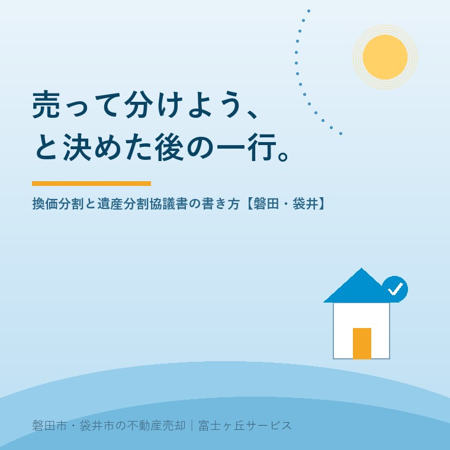

2026年8月11日｜カテゴリ：相続・しまい方／コスト・税・制度

この記事の要点
Q. お盆にきょうだい3人で話し合って、実家は売ってお金で分けることになりました。手続きが面倒だから長男の名前で登記して、売れたら3等分しようという話です。これで大丈夫でしょうか。
A. 方針としては正しいのですが、そのままだと贈与税の対象になり得ます。長男ひとりの名義で相続登記をすると、登記上は「長男が実家を全部相続した」ことになります。その長男が売却代金を弟妹に渡せば、形式的には長男から弟妹への贈与に見えてしまうからです。ただし国税庁の質疑応答事例「遺産の換価分割のための相続登記と贈与税」は、その単独登記が単に換価のための便宜のものであり、換価代金を遺産分割の内容に従って分配した場合には、贈与税の課税は生じないとしています。つまり分かれ目は、遺産分割協議書に「換価のための便宜上の登記である」と書いてあるかどうか。この一行があるかないかで、数百万円の税金が動きます。あわせて、譲渡所得の確定申告は代表者ひとりではなく、各相続人がそれぞれの取得割合で行うのが原則です。磐田市・袋井市・森町では、介護施設の運営から不動産事業を始めた富士ヶ丘サービスのような「介護×不動産」専門の会社に相談するという選択肢があります。
お盆に、実家の居間で話がまとまる。
「もう誰も住まないんだから、売って分けよう」。
ここまで来たご家族は、実はかなり幸運です。この一言が出ないまま10年が過ぎる家を、私は磐田・袋井でいくつも見てきました。だからまず、その決断に敬意を表します。
そのうえで、今日はその次の一歩の話をします。方針が決まった直後に、多くのご家族が同じ場所でつまずくからです。誰の名義にして、どう売り、どう分けるか。そして、そのやり方を紙にどう書くか。ここを間違えると、本来なら1円もかからないはずの贈与税が発生します。
数字と制度は、2026年8月11日時点で国税庁・法務省が公表している内容に沿って書きます。
相続財産の分け方は、実務上こう整理されます。
| 方法 | 内容 | 実家じまいでの向き不向き |
|---|---|---|
| 現物分割 | 不動産は長男、預金は次男、というように財産ごとに分ける | 実家の価値が大きいと不公平になりやすい。土地を分筆して分ける手もある |
| 代償分割 | ひとりが実家を取得し、他の相続人に代償金を支払う | 取得する人に現金の用意が必要。住み続ける人がいる場合に向く |
| 換価分割 | 実家を売却して現金に換え、その代金を分ける | 誰も住まない実家では、これが最も多い。1円単位で公平に分けられる |
「売って分けよう」は、この3つ目、換価分割です。空き家になった実家では、圧倒的にこれが選ばれます。理由は単純で、不動産は分けられないが、お金は分けられるからです。
ただし換価分割には、他の2つにはない固有の手続きがあります。売るためには、いったん誰かの名義に登記しなければならない。ここから話がややこしくなります。
亡くなった方の名義のままでは、家は売れません。必ず相続登記を経てから売却になります。そして選択肢は2つです。
| ①代表者の単独名義 | ②法定相続分どおりの共有名義 | |
|---|---|---|
| 登記の形 | 長男ひとりの名義に | 3人が各3分の1ずつ |
| 売買契約の手続き | 長男ひとりで完結。実印・印鑑証明も1人分 | 全員が契約書に署名押印。決済にも原則全員が出席（委任状で対応可） |
| 遠方のきょうだいの負担 | 軽い | 重い。平日の決済に日程を合わせる必要がある |
| 贈与税のリスク | 協議書の書き方次第で発生し得る | 低い（各自が自分の持分を売って自分で受け取るだけ） |
| 売却代金の流れ | いったん長男の口座へ入り、そこから分配 | 各自の口座へ直接、持分に応じて入金できる |
手続きの軽さでは①が圧倒的です。特にきょうだいが東京・名古屋に散っているという磐田・袋井では珍しくない状況では、②は決済日程の調整だけで数週間かかります。決済当日に動くお金の全部で書いたとおり、決済は平日の午前中、銀行の応接室で1時間ほど。ここに全員を集めるのは、想像以上に大変です。
だから現場では①が選ばれる。選ばれるのですが、その瞬間に税務の落とし穴が開きます。
長男の単独名義で相続登記をすると、法務局の記録上は「長男が実家を単独で相続した」と読めます。
その長男が実家を3,000万円で売り、弟と妹に1,000万円ずつ渡した。これを外形だけで見ると、長男が自分の財産を2,000万円分あげた、つまり贈与です。
贈与税は税率が高い税金です。仮に1,000万円を一般贈与財産として受け取れば、基礎控除110万円を差し引いた890万円が課税価格となり、百万円単位の税額が出ます。本来は相続で受け取るはずのお金だったのに、です。
ここで頼りになるのが、国税庁の質疑応答事例「遺産の換価分割のための相続登記と贈与税」です。
内容を要約すると、共同相続人のひとりの単独名義に相続登記をした場合であっても、その登記が単に換価のための便宜のものであり、その換価代金が遺産分割の内容に従って分配されるときは、贈与税の課税は生じないという整理です。逆に言えば、単独登記がその相続人の相続分を超える部分の取得と認められるときは、贈与として扱われ得るということになります。
つまり国は、「便宜上の登記」であることが示せるなら贈与としないと言っています。問題は、それをどうやって示すか。答えは、遺産分割協議書です。
実務でお勧めしている書き方を、そのまま載せます。
記載例（換価分割・代表者単独名義の場合）
第1条 相続人らは、被相続人の遺産である下記不動産を換価し、その換価代金を分配して取得することに合意した。
第2条 前条の換価手続の便宜のため、相続人 甲野一郎 が下記不動産につき単独で相続による所有権移転登記を経由し、売却に関する一切の手続を行うものとする。ただし、当該登記および所有名義は、換価および分配の便宜上のものであり、甲野一郎が下記不動産を実質的に単独取得する趣旨ではない。
第3条 換価代金から、仲介手数料、登記費用、測量費用、建物解体費用、残置物の処分費用、印紙代、公租公課の精算金その他売却に要した一切の費用を控除した残額を、相続人 甲野一郎、甲野二郎、乙野花子が各3分の1の割合で取得する。
第4条 前条の分配は、売買代金の決済後◯日以内に行うものとする。
この中で、税務上いちばん効くのが第2条の後半です。
「換価および分配の便宜上のものであり、実質的に単独取得する趣旨ではない」。
この一文が、国税庁の質疑応答事例が想定する状況そのものを、書面で宣言しています。これがあるかないかで、数百万円が動きます。司法書士に相続登記を依頼するとき、「換価分割です」と最初に伝えてください。伝えれば、まず間違いなくこの条項を入れてくれます。伝えなければ、シンプルな「甲野一郎が取得する」だけの協議書になります。
税務とは別に、実務でいちばん揉めるのが費用の負担です。
売却には、仲介手数料、登記費用、印紙代、測量費用、残置物の処分費用がかかります。これを誰が払うのか。「代金は3等分」とだけ書いて、費用の扱いを書かないと、立て替えた代表者が後から精算を求め、そこで空気が悪くなります。
「一切の費用を控除した残額を分ける」と最初に書いておく。これで、代表者が立て替えて、残りを分ければ済みます。手取りで考える売却で書いたとおり、実家じまいは売値ではなく手取りで判断すべきものです。協議書もそう書くのが自然です。
特に磐田・袋井の実家では、残置物の処分費用が数十万円になることが珍しくありません。仏壇、農機具、納屋いっぱいの道具類。ここを「あとで考えよう」にすると、必ず後で問題になります。
もうひとつ、見落とされやすい論点です。
実家が売れて利益（譲渡所得）が出た場合、翌年の確定申告が必要になります。ここで「登記が長男名義だったから、長男が全部申告するのだろう」と考えてしまう方が多いのですが、これは違います。
換価分割の場合、譲渡所得は各相続人が、それぞれの取得割合に応じて申告するのが原則です。代表者ひとりが売買契約書に署名していても、税法上は各相続人が自分の持分にあたる不動産を売却したと考えます。
3,000万円で売れて3等分なら、各自が譲渡価額1,000万円として申告する、という形です。
関連して、国税庁の質疑応答事例「未分割遺産を換価したことによる譲渡所得の申告とその後分割が確定したことによる更正の請求、修正申告等」も知っておくと役に立ちます。遺産分割が決まらないまま売った場合、譲渡所得は各相続人の法定相続分に応じて申告するのが原則で、所得税の確定申告期限までに換価代金が分割され、共同相続人の全員がその取得割合に基づいて申告した場合には、その申告が認められるという整理です。
そして重要なのが後半です。いったん申告した後に分割が確定しても、それを理由とした更正の請求や修正申告はできないとされています。つまり、分け方は確定申告のタイミングまでに固めておくべきだということです。「とりあえず売って、分け方は追い追い」は、税務では後戻りがききません。
各相続人がそれぞれ申告するということは、使える特例も一人ひとり判断するということです。実家じまいで関係してくるのは、主に次の2つです。
取得費加算の期限は、相続税の申告期限（相続の開始を知った日の翌日から10か月）から3年ですから、実質的には相続開始から3年10か月。「お盆に決めて、来年の春に売る」くらいのペースなら、まず問題ありません。問題は、決めたのに動かない場合です。
換価分割を決めたご家族に、私がいつもお渡ししている一覧です。
| 期限 | 内容 | 過ぎるとどうなるか |
|---|---|---|
| 10か月 | 相続税の申告・納付期限（相続の開始を知った日の翌日から） | 加算税・延滞税。配偶者の税額軽減や小規模宅地等の特例にも影響し得る |
| 3年 | 相続登記の申請義務（令和6年4月1日施行）。相続の開始および所有権を取得したことを知った日から3年以内 | 正当な理由なく怠ると過料の対象。過去の相続にも適用される |
| 3年10か月 | 取得費加算の特例が使える譲渡期限 | 相続税を払っていても、取得費に加算できなくなる |
| 10年 | 遺産分割の10年ルール（民法904条の3・令和5年4月1日施行）。相続開始から10年経過後の分割は、原則として特別受益・寄与分を考慮せず法定相続分による | 「介護をしたのは私」「学費を出してもらったのは兄」という主張ができなくなる |
この表でいちばん見落とされているのが、いちばん下の10年ルールです。
実家じまいの現場では、「私が10年、母の介護をしてきた」という思いを持つ方が必ずいます。それを分け方に反映させたいなら、寄与分として主張できるのは相続開始から10年までです。10年を過ぎると、原則として法定相続分で機械的に割ることになります（10年経過前に家庭裁判所へ遺産分割請求をしていた場合など、例外はあります）。
「介護をした分は多めに」を実現したいなら、早く話すしかない。制度がそういう作りになっています。逆に、きれいに等分することで納得しているご家族なら、この期限は気にしなくて構いません。
この地域で換価分割の相談を受けるとき、私が最初に確認するのは金額ではありません。「その紙は、もうありますか」です。
お盆に口頭で決まったことは、その場では全員が同じことを理解しているつもりでいます。ところが半年後、価格を下げるかどうかという場面になると、記憶が食い違い始めます。「売れなければ下げると言ったはずだ」「そんな話は聞いていない」。紙がないと、この段階で必ず止まります。
だから私は、売り出す前に遺産分割協議書と、価格の下限だけは決めておいてくださいとお願いしています。協議書には「◯◯万円を下回る価格での売却は、相続人全員の同意を要する」という一文を入れておくと、後の話が早い。値引き交渉と指値の話で書いたとおり、値下げの判断は必ずやってきます。そのときに全員へ電話をかけ直すのか、あらかじめ決めた線で即答できるのかで、売却のスピードが変わります。
もう一点、この地域特有の事情があります。実家に農地が付いていることが多い。田や畑は、宅地と同じようには売れません。農地法の許可、農業委員会の手続き、買い手の制約。換価分割の対象に農地を含めるなら、「換価できない財産が残る可能性」を協議書に書いておく必要があります。「全部売って3等分」と書いたのに畑が売れ残る、というのは、この地域では実際に起こります。
富士ヶ丘サービスは、磐田市見付で介護施設を運営するところから不動産の仕事を始めました。ですからご相談の入口は、たいてい「親が施設に入った」「親を看取った」です。実家で親を看取った家は事故物件になるのかという記事も同じ日に書きましたが、ご家族の関心は、家の値段の前に、家にまつわる気持ちの整理にあります。
そのうえで申し上げます。換価分割は、いちばん喧嘩になりにくい分け方です。不動産という「分けられないもの」を、お金という「1円単位で分けられるもの」に変えてしまうのですから、当然です。きょうだい仲を守る手段として、換価分割は優秀です。
ただし、それは紙が正しく書けている場合に限ります。「便宜上の登記である」という一行が抜けただけで、税務署から見た景色は変わります。お盆に決めたことを、9月までに紙にしてください。それが、この記事でいちばんお伝えしたいことです。
お盆に「売って分けよう」と決められたご家族へ。いちばん難しいところは、もう越えています。残っているのは事務です。事務は、順番さえ分かれば片づきます。
その順番を、一枚の紙にしてお渡しします。まずは固定資産税の通知書だけ、お持ちください。
ふじがおか実家カルテ｜換価分割の段取りを一枚に
「売って分ける」を、紙の順番に変えます。
名義をどうするか、協議書に何を書くか、司法書士と税理士のどちらに先に相談すべきか。相続人の人数・所在・農地の有無から、換価分割の段取りを1枚に整理してお出しします。売却の想定額と、費用を引いたひとりあたりの手取り概算まで添えます。
本記事は2026年8月11日時点で国税庁・法務省等が公表している情報に基づく一般的な解説であり、個別の税務判断・法律判断を示すものではありません。遺産分割協議書の記載例は一般的なひな型の一例であり、相続人の構成、財産の内容、遺言の有無、農地や共有持分の有無等により適切な文言は異なります。贈与税・譲渡所得税の課税関係は事実関係の全体から判断されるため、協議書に一文を入れれば必ず非課税になるというものではありません。相続空き家の3,000万円特別控除および取得費加算の特例には、本文に記載していない要件・添付書類があります。実際の手続きにあたっては、遺産分割協議書と相続登記は司法書士または弁護士に、贈与税・譲渡所得税の申告は税理士または所轄の税務署に、農地の売買は農業委員会に必ずご確認ください。個別のご相談は当社までどうぞ。

この記事を書いた人：大石浩之（宅地建物取引士）
磐田市・袋井市・森町で「介護×相続×空き家」に特化した不動産売却支援を行う富士ヶ丘サービスの代表取締役・宅地建物取引士。介護施設の運営から不動産事業を始めた経験をもとに、売主とご家族が困らない売却を一件ずつお手伝いしています。プロフィール
磐田市・袋井市・森町の実家じまい・相続空き家相談
固定資産税通知書だけでも相談できます
住所があいまいでも、通知書や写真から名義・道路・農地・残置物の確認順を整理します。カルテ申込またはLINEで状況を送ってください。
富士ヶ丘サービス株式会社／静岡県磐田市見付5789番地1／TEL:0538-31-3308／静岡県知事 (2) 第14083号／代表取締役・宅地建物取引士 大石 浩之